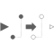

ShiftSampleShift the input clock by a fraction of the last interval and provide it as output clock |

|
Information
This information is part of the Modelica Standard Library maintained by the Modelica Association.
This block shifts the first activation of clock output y by fraction shiftCounter/resolution of the period (or for a non-periodic signal by a fraction of the last interval). Here, shiftCounter and resolution are positive Integer parameters.
To be more precise: The block constructs (conceptually) a clock “cBase”
Clock cBase = subSample(superSample(u, resolution), shiftCounter)
and clock y starts at the second clock tick of cBase.
Example
The following
example
generates a periodic clock of 20 ms period, and
then shifts it with shiftCounter = 4 and resolution = 3:
 |
 |
|
| model | simulation result |
The first activation of clock output y of block shiftSample1 is shifted in time (4/3*20ms). The parameter values shiftCounter = 4 and resolution = 3 are visible at the bottom of the icon.
Parameters (2)
| shiftCounter |
Value: 0 Type: Integer Description: Numerator of shifting formula |
|---|---|
| resolution |
Value: 1 Type: Integer Description: Denominator of shifting formula |
Connectors (2)
| u |
Type: ClockInput Description: Connector of clock input signal |
|
|---|---|---|
| y |
Type: ClockOutput Description: Connector of clock output signal |
Used in Examples (1)
|
Modelica.Clocked.Examples.Elementary.ClockSignals Example of a ShiftSample block for Clock signals |